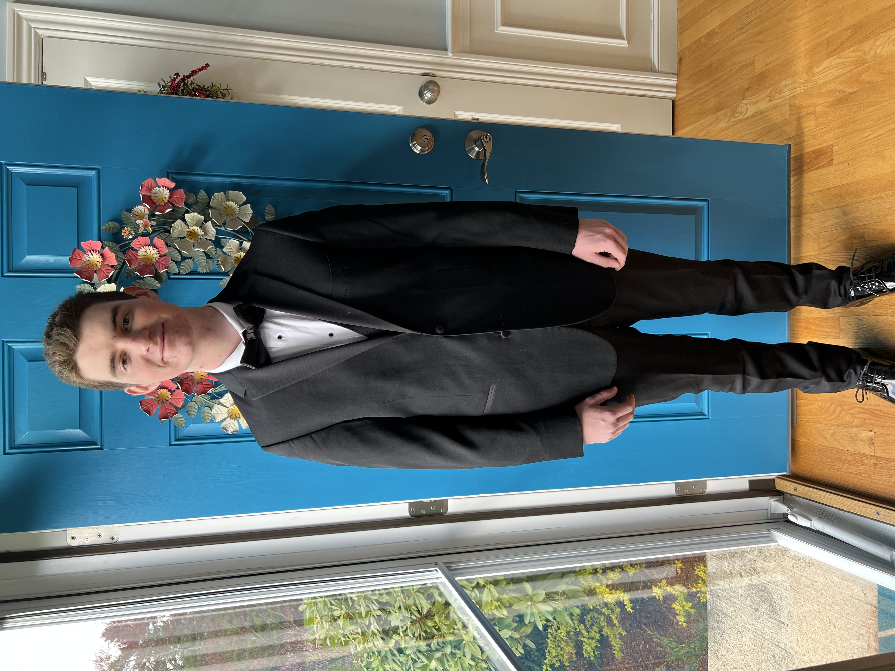

About Me
I was born in Milford, Massachusetts but moved to Hopkinton by the age of 3. I grew up with a loving family who cared for me and wanted me to take pride in my education. When I was very young I became interested in Computer Science at a summer camp I attended. This passion eventually led me to take multiple AP computer science courses in High School and a desire to take it even further in college. Some of my other hobbies and interests include Soccer and 3d printing.
Computer Science!
My love of Computer Science started when I took a Python course in 7th grade. I instantly fell in love with the idea of making whatever I wanted to. Most of my knowledge of the field came from the two AP Computer science courses I took in highschool (Computer Science Principles, Computer Science A). These courses made me find a love for solving problems while having fun in the process (especially Java in Computer Science A). At this point in my life I currently know 4 languages, Python, C, Java, Html/Css/Javascript.